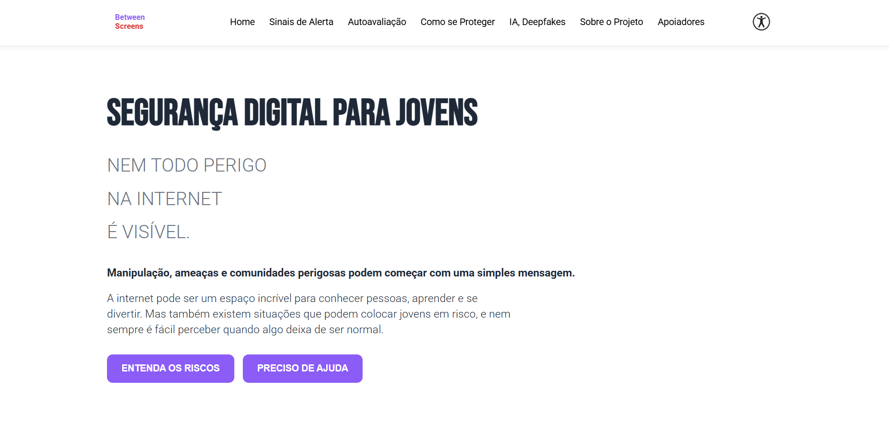
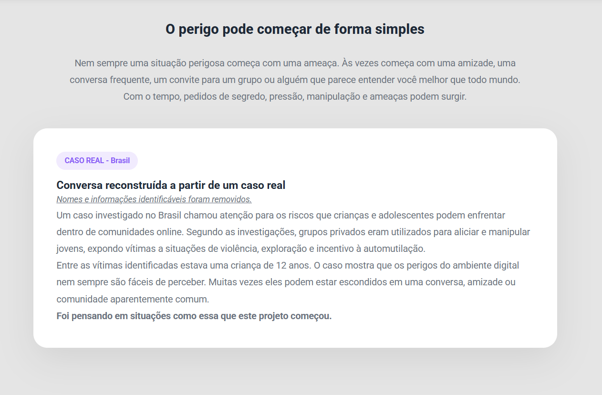
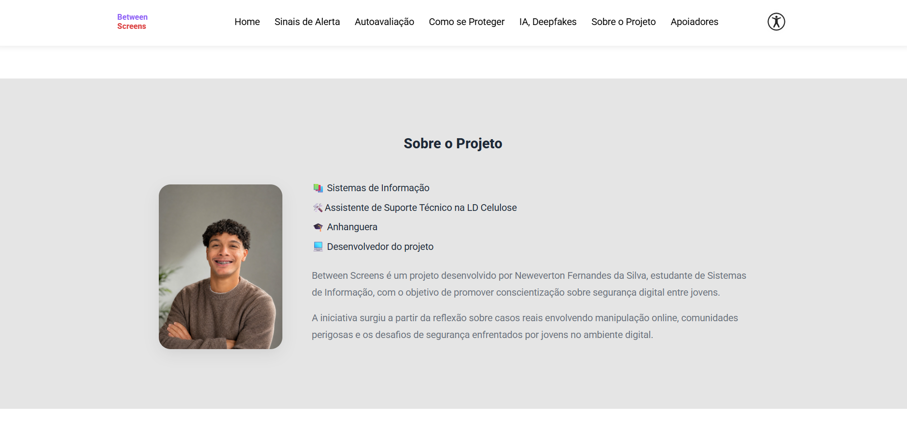
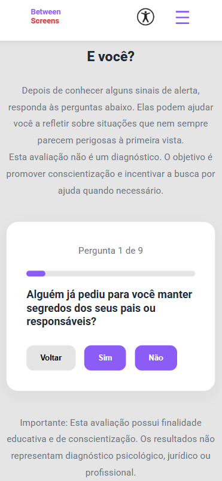

BETWEEN
SCREENS.
Conscientização sobre segurança digital.
POR TRÁS DO PROJETO.
Projeto web de conscientização sobre riscos enfrentados por jovens no ambiente digital. O conteúdo aborda proteção, sinais de alerta e uso responsável da internet.
UM OLHAR POR DENTRO.




O QUE O PROJETO ABORDA.
O Between Screens busca promover a conscientização sobre os riscos presentes no ambiente digital, incentivando jovens a desenvelver uma relação mais segura, crítica e responsável com a internet.
Apresentação de informações sobre manipulação psicológica, chantagem, exposição de dados pessoais e comunidades perigosas, ajudando os usuários a reconhecer situações que possam comprometer sua segurança e bem-estar.
Disponibilização de orientações práticas para identificar comportamentos suspeitos, proteger informações pessoais, estabelecer limites nas interações virtuais e buscar ajuda diante de situações de risco.
Organização de informações em uma linguagem clara, objetiva e acessível, utilizando recusos visuais e uma navegação intuitiva para facilitar a compreensão de temas complexos por diferentes públicos